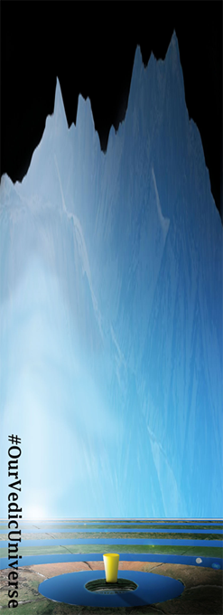

SAILING TO JAMBŪDVĪPA
Does the Earth Float in Space?
BY: MAYESVARA DASA
Nov 30, 2017 — IRELAND (SUN) —
INTRODUCTION
To Prahlada Nrsingha dasa, Caitanya dasa, Sadusanga dasa and Guru-Krishna dasa: Dear devotees, thank you for your kind responses to our articles on the topic of the Earth. I very much appreciate that you have taken the time to read through the articles and to consider the arguments that have been made. In this first part of three papers we will attempt to answer the questions asked by Sadhusanga dasa, and will reply to Caitanya dasa and Prahlada Nrsingha Prabhu in a separate paper.
Sadusanga dasa's inquiry is as follows:
-
"The main issues I am grappling with are the apparent contradictions that we see in other segments of Bhagavatam itself. Directly below are some of YOUR QUOTES in reference to the Earth based on your understanding of the 5th canto. Then below that are some DIRECT QUOTES from different segments of the Bhagavatam (including a couple purports by Srila Prabhupada himself on this issue). Please note the apparent contradictions. Your interpretation of the Earth is that it is not a globe and does not float 'in space'. However, many other verses in the Bhagavatam suggest the contrary.
Can you kindly explain these contradictions so that I may understand? I'm sure I am missing something, and it is probably something simple and obvious. Thank you for this clarification on these topics."
Reply: Thank you again for the question as it helps everyone come together to understand the issue. I shall quote the verses that you cited in a moment; and then attempt a reply to your inquiry by looking at the following 4 areas:
(1.1) According to Srimad Bhagavatam the planets float in space due to vayu (air), not gravity.
(1.2) According to Srimad Bhagavatam the Earth is an exception from the other planets and is held by Ananta-sesha, not by air or gravity.
(1.3) The historical context for Srila Prabhupada's usage of the terms 'Earth planet' and 'Earth globe.'
(1.4) Did Srila Prabhupada reject the flat-Earth concept?
We will look at parts 1.1 and 1.2 in this paper, and will come back to sections 1.3 and 1.4 in a following paper.
Our main guide in understanding this issue of the Earth is, of course, His Divine Grace, Srila Prabhupada, Founder-Acharya of the International Society for Krishna Consciousness. Since the concept of the Earth as a great circular plane is not one that Srila Prabhupada ever preached about, devotees may naturally be doubtful to hear that the Earth of Srimad Bhagavatam is described as such (and thus not as a globe floating in space). When we hear Srila Prabhupada speaking about Bhumi as 'the Earth planet' or 'the globe,' or when we read these words in one of Srila Prabhupada's translations, we naturally assume the Earth of Srimad Bhagavatam is the same as our modern idea of Earth as a round globe-shaped planet floating in dark space. But there is a problem! The Earth described in Srimad Bhagavatam (Bhu-mandala) is not described as a round globe-shaped planet floating in dark space with a circumference of 24,900 miles; it is described as a 4 billion-mile diameter circle with a depth of hundreds of thousands of miles. It is not floating in space, but is held by Ananta-sesha. We need then to first understand why Srila Prabhupada did not speak of this extraordinary Earth concept, and why he translated verses about the Earth in a manner that leads us to believe that the Earth is a planet floating in space just as the scientists present it. In the first two parts of this paper we will look at the verses translated by Srila Prabhupada and cited by Sadhusanga Prabhu that seem to suggest that the Earth is indeed floating in space like the other planets. I assure the devotees that the original verses of Srimad Bhagavatam do not describe any such thing. In the second two parts of the paper we will, therefore, attempt to explain why Srila Prabhupada presented the Earth as a globe when the Srimad Bhagavatam itself does not describe it as such.
(1.0) THE PLANETS FLOAT IN SPACE DUE TO AIR, NOT GRAVITY
Sadhusanga Prabhu quoted the following translations and purports in regard to the Earth planet apparently floating:
-
"The Lord placed the earth within His sight on the surface of the water and transferred to her His own energy in the form of the ability to float on the water. While the enemy stood looking on, Brahma, the creator of the universe, extolled the Lord, and the other demigods rained flowers on Him (SB 3.18.8)
Purport:
"…Not only the earth but many, many millions of planets are floating in the air, and this floating power is endowed upon them by the Lord; there is no other possible explanation…."
Again:
Out of fear of the Supreme Personality of Godhead the rivers flow, and the ocean never overflows. Out of fear of Him only does fire burn and does the earth, with its mountains, not sink in the water of the universe (SB 3.49.42)
3.29.42 Purport segment: (reference to how planets 'float in the air above the Garba Ocean) "… It is said here that the planets do not sink. Since they are floating under the order or energy of the Supreme Godhead, they do not fall down into the water which covers half the universe. All the planets are heavy, with their various mountains, seas, oceans, cities, palaces and buildings, and yet they are floating. It is understood from this passage that all the other planets that are floating in the air have oceans and mountains similar to those on this planet."
In the first verse presented by Sadhusanga Prabhu, the scene depicts Lord Varaha lifting the submerged Earth and then causing the Earth to float on the Garbhodaka Ocean. We must remember that this is an exceptional circumstance for the Earth as Bhumi is otherwise held up by Ananta-sesha. The normal situation is that Ananta-sesha floats on the surface of the Garbhodaka Ocean and He holds the Earth above Him on one of His hoods. Ananta-sesha is specifically holding the Earth, not the universe itself, as Srila Prabhupada often translates. We shall present the relevant verses momentarily that describe this situation.
In his purport to the verse cited above (SB 3.18.8), Srila Prabhupada takes this instance of the Earth floating on the water merely to expound on the power of Krishna who causes all the other planets to float in space. As with all of Srila Prabhupada's translations and purports, it is his overwhelming desire to impress upon the reader the reality of Krishna's ruling power throughout the universe. It is true that Krishna makes all the planets float, but the Earth is an exception and that is a detail we have to look at. First, how the stars and planets are held in place is explained in the verse below. This is a long and detailed verse, but I need to quote so that we can understand how the planets are moving:
-
"When bulls are yoked together and tied to a central post to thresh rice, they tread around that pivot without deviating from their proper positions—one bull being closest to the post, another in the middle, and a third on the outside. Similarly, all the planets and all the hundreds and thousands of stars revolve around the polestar, the planet of Maharaja Dhruva, in their respective orbits, some higher and some lower. Fastened by the Supreme Personality of Godhead to the machine of material nature according to the results of their fruitive acts, they are driven around the polestar by the wind and will continue to be so until the end of creation. These planets float in the air within the vast sky, just as clouds with hundreds of tons of water float in the air or as the great shena eagles, due to the results of past activities, fly high in the sky and have no chance of falling to the ground (SB 5.23.3)."
Here it says that the past good karma (karma-nirmita) of the living entities (who form the stars and planets), along with the controlling power of vayu (vayu-vasah), under the direction of the Supreme Personality of Godhead (purusha) keeps the planets (graha-adayah) and other luminaries (jyotih-ganah) in their respective orbit, so that they do not fall to the Earth (bhuvi—on the ground; na—not; patanti—fall down). The grahas thus traverse in their orbits and revolve in the sky like clouds that are moved by the wind (kramanti—revolve all around; nabhasi—in the sky; yatha—exactly like; meghah—heavy clouds; syena-adayah—birds such as the big eagle; vayu-vasah—controlled by the air).
The planets are thus held not by gravity, but by vayu or the manipulation of air (avalambya—taking support of; vayuna—by the wind; udiryamanah—being propelled). Srila Prabhupada thus disputes the gravity theory in a very important purport to this verse which can be found here.
This verse and purport will be one of the foundational statements for our spiritual scientists to defeat the globe theory which practically rests on the idea of gravity. According to the scientists, space is a vacuum with no air present; but here we learn that cosmic winds operate in space and are both holding and moving the planets in their orbits. [Incidentally, in the years 1969-72, the American government presented to the world that their astronauts made successive trips through the vacuum of space and landed on the surface of the moon. For followers of Srimad Bhagavatam, this one verse proves that the whole presentation was fake (as Srila Prabhupada consistently argued). We will later write a paper on this whole issue of the Moon Landing Hoax, but, for the moment, let everyone take note that Srimad Bhagavatam does not present space as a vacuum. Cosmic winds operate in space under the direction of Vayu and keep the planets afloat and in their respective orbits].
The acharyas comment on the above verse as follows:
-
"Oxen tied to a thrashing pole with a three stringed rope, move in circles around the central pole—some of them tied from inside and others tied from outside. In the same manner, the celestial bodies which are tied to the kala-chakra from inside and outside move in circles around Druva, propelled by their karma and the forces of pravaha Vayu. They resemble birds in the sky and do not fall. The karma of jivas and the properties of matter such as the wind are manifold and wonderful and are responsible for holding these bodies in the sky (Commentary by Viraraghava to SB 5.23.3)
Just as oxen tied to the central pole of the threshing floor move in their respective positions, so do the stars and planets fixed by Ishvara [the controller] in the proper positions within the kala-cakra move by their own karma [the results of fruitive activities] and propelled by Vayu [wind or the demigod of wind, Vayu] (Commentary by Vishvanatha Cakravarti Thakura to SB 5.23.3)
The same idea is further clarified. As oxen tied to a pole do not violate their path and position, so do the stars and planets move around Dhruva, driven by Vayu and assisted by their own karma. They are attached to the kala-chakra by ropes of wind from inside and outside and they do not fall because of these reasons. The same thing is further elaborated. The association of prakrti (matter) and purusa (the living entity) is so complex that it produces wonderful events. This is one of the reasons for their not falling." (Commentary by Sri Bhagavatacharya 5.23.3)
Here we learn about a very personal aspect of the universe—that the stars and planets all have personal existence behind them, and karma is one of the factors that enable these luminaries to orbit in the celestial regions.
-
"They do not fall like us because they have done excellent deeds in the form of the worship of Vishnu. As a result of these, they are endowed with extraordinary powers" (Commentary by Yadavarya to SB 5.23.3)
I doubt that modern astronomers would factor karma as one of the reasons why planets stay in orbit.
Since the planets and other luminaries rotate in the sky by the force of karma and the manipulation of air (not gravity), then what about the Earth; is the Earth also held up by air? The answer is no. The Earth as always is in her own separate and unique category. The great Earth circle (Bhu-mandala) is held up by Ananta-sesha.
(1.2) THE EARTH IS HELD BY ANANTA-SESHA, NOT BY AIR OR GRAVITY
It should be noted first of all that the Earth (Bhu-mandala) is in its own separate category from the nine planets (grahas) and other luminaries in the sky. In both Vedic and ancient Greek and Roman cosmology, the Earth is not considered a planet like the others. We have discussed the point briefly in the introduction to the previous paper.
Sukadeva Goswami states that the grahas and other luminaries are held up and rotate by the control of wind. The Earth by contrast is not floating, but is held aloft from beneath by Ananta-sesha. We shall now look at the relevant verses that describe the difference:
There are many verses in Srimad Bhagavatam and Caitanya-caritamrta that describes Ananta-sesha holding the Earth; we shall discuss seven of these verses. To put these verses in context, let us bear in mind that Sukadeva Goswami begins his description of the universe in chapter 16 of the fifth canto. We are soon to learn that the Earth (Mahi—the great one) is actually the largest feature in the universe, and thus most of the description about the universe is actually centered on the Earth. Chapters 16-19 describe the features on the external surface of the Earth such as the seven islands and oceans; chapters 24 and chapter 26 describe what is within the depths of the Earth—the seven subterranean realms and the hells; chapters 21-23 describe what is above the Earth such as the planets and stars; and chapter 25 describes how the Earth is held up. Chapter 25 is a continuation of all that has been spoken about the Earth so far, and now Srila Sukadeva explains how the Earth is held in place:
VERSE ONE
"yasyedam ksiti-mandalam bhagavato 'nanta-murteh
Sukadeva Gosvami continued: This great universe, situated on one of Lord Anantadeva's thousands of hoods, appears just like a white mustard seed. It is infinitesimal compared to the hood of Lord Ananta." (SB 5.25.2
Here Srila Prabhupada translates ksiti-mandalam as universe, but both context, as well as the name itself (ksiti—earth), tells us that it is a reference to Ananta-sesha holding the Earth. The context is that Sukadeva Goswami is in the course of describing the features above and below Bhu-mandala. Here he informs us that Bhu-mandala is held from below by Ananata-sesha who resides on the surface of the Garbhodaka Ocean. The Garbhodaka Ocean is within the universe; thus Ananta-sesha is holding the Earth, not the universe itself.
The acharyas in their purports to these verses also confirm that Sesha is holding the Earth (Bhu-mandala), not the universe itself:
-
"Even the name of Ananta is fully justified in Him because of His infinite strength. Ananta means boundless which is evident since He bears the entire Earth effortlessly on His head like a mustard seed." (Commentary to SB 5.24.2 by Bhagavatprasadacarya)
"He is called Ananta because of His infinite strength indicated by His bearing the Earth on His head like a mustard seed." (Commentary to SB 5.24.2 by Yadavarya)
"The entire Earth rests on one of his thousand hoods like a mustard seed. Thus because of His infinite strength, He is called Ananta." (Commentary to SB 5.24.2 by Viraraghava)
In translations, Srila Prabhupada often wants to convey more than the particular verse is literally saying, and here Srila Prabhupada is once again emphasizing the supreme might of Krishna who supports the entire universe. However, the verse specifically informs us that it is the Earth circle (ksiti-mandalam), not the universe itself that is held by Ananta-sesha. Ksiti means Earth and mandala means circle, thus ksiti-mandala is just another way of saying Bhu-mandala or Bhu-gola. Srila Prabhupada even translates it as such in a different verse:
-
"caradbhih ksiti-mandalam—while travelling on the surface of the Earth" (SB 1.13.9)
Ksiti is a common Sanskrit name for the Earth and Srila Prabhupada consistently translates it as such throughout Srimad Bhagavatam, for example:
-
"Lord Brahma said: When the unlimitedly powerful Lord assumed the form of a boar as a pastime, just to lift the planet earth (ksiti-tala)" (SB 2.7.1)
That the name ksiti means the Earth is confirmed in all Sanskrit dictionaries. Thus the names ksiti-mandala or ksiti-tala is just another way of saying Bhu-mandala or Bhu-gola. The Earth (ksiti-tala) that was lifted by Varahadeva as mentioned in the above verse (SB 2.7.1) was, in fact, the entire Bhu-mandala which became submerged in the Garbhodaka Ocean. Again, it requires that we understand what is meant by the Earth when we come to understanding whether Varaha lifted the Earth circle, or a so-called Earth globe. So what was the size and shape of the Earth that Varaha-deva lifted from the Garbhodaka Ocean—was it a great circle, or a small globe? And what does Ananta-sesha hold—an Earth circle, an Earth globe, or as Srila Prabhupada translates—even the universe itself? In order for us to avoid endless speculation on these types of question, we should follow Hridayananda Goswami's common-sense and humorous advice "When all else fails, read the instructions!" The method to understand the Earth is simply by following Sukadeva Goswami's description.
VERSE TWO
Both Bhu-mandala and Bhu-gola are names used at the very beginning of Sukadeva Goswami's description of the Earth starting at chapter 16 of the fifth canto; and these two names are again used in chapter 25 to inform us that Ananta-sesha is holding that self-same Earth. So let's go through that sequence: At the beginning of chapter 16, King Pariksit states:
O brahmana, you have already informed me that the radius of Bhu-mandala extends as far as…" (SB 5.16.1)
Here the name Bhu-mandala is invoked, and Pariksit Maharaja goes on to ask further details about the nature of this Bhu-mandala. Sukadeva Goswami had previously mentioned (at the beginning of canto five) about the formation of the seven islands and oceans on Bhu-mandala by King Priyavrata. Now King Pariksit wishes to know in detail about these islands and other features of Bhu-mandala. In response to his inquiry, Sukadeva Goswami says:
Here Sukadeva Goswami says that he will explain about the principal features of the Bhu-gola with the names, measurements, and characteristics of the various places upon and below the Earth. In both these verses the names Bhu-gola and Bhu-mandala are invoked as names of the Earth. The acharays confirm in their commentaries to this verse that Bhu-gola is a reference to the Earth, not the universe itself, as some try to misconstrue. Sukadeva Goswami then begins his description of the Earth (bhu-golaka) which covers many chapters, and when we come to chapter 25 he confirms that this Bhu-mandala/Bhu-gola is held by Ananta-sesha. Here it says:
TRANSLATION: Because the Lord is unlimited, no one can estimate His power. This entire universe, filled with its many great mountains, rivers, oceans, trees and living entities, is resting just like an atom on one of His many thousands of hoods. Is there anyone, even with thousands of tongues, who can describe His glories?" (SB 5.25.12)
Again for reasons already stated, Srila Prabhupada has translated Bhu-gola as 'universe,' but Bhu-gola is a specific reference to the Earth as Srila Prabhupada himself has translated on other occasions, and as confirmed by the acharyas in their commentaries to the above verse:
-
"The Earthen sphere along with mountains." (Commentary by Sridhara Swami to SB 5.25.12)
"Even a man endowed with a thousand faces canot describe the greatness of Sesha who bears on His head the Earth like a mustard seed." (Commentary by Viraraghava to SB 5.25.12)
"Even Sesha's bearing of the Earth on His head is due to Hari's presence in Him." (Commentary by Vijayadhvaja Tirtha)
"The Earth rests like an atom on only one head" (Commentary by Visvanatha Cakravarti Thakura)
Since the diameter of Bhu-gola is calculated as 4 billion miles (see SB 5.20.38), Ananta-sesha is certainly not holding a globe of 24,900 miles circumference. Thus, we have yet another example of why the name Bhu-gola cannot possibly be used in connection with such an assumed creation as an Earth globe floating in space. The Bhu-gola is 4 billion miles in diameter and is held by Ananta-sesha.
VERSE THREE
The next verse invokes the name Bhu-mandala and states again that Ananta-sesha holds this Bhu-mandala on His hood:
Lord Siva continued: All the great sages accept the Lord as the source of creation, maintenance and destruction, although He actually has nothing to do with these activities. Therefore the Lord is called unlimited. Although the Lord in His incarnation as Sesha holds all the universes on His hoods, each universe feels no heavier than a mustard seed to Him. Therefore, what person desiring perfection will not worship the Lord?" (SB 5.17.21)
Although in all three verses Srila Prabhupada has translated names for the Earth as the universe itself, both context of what is being described, as well as the name itself tells us that Ananta-Sesha is holding the Earth.
Here the name for Earth (Bhu-mandala) immediately tells us that Ananta-sesha is holding the Earth itself which Sukadeva Goswami has been describing in the course of chapters 16-26 of the fifth canto. Ananta-sesha is not holding the universe itself, nor the assumed Earth globe of 24,900-mile circumference. Although the Earth's diameter is usually given as 4 billion miles (SB 5.20.38), it is actually just short of that figure. In Vishvanatha Cakravarti Thakura's commentary to SB 5.20.38, he says that the Earth sphere (Bhu-mandala) is just short of 4 billion miles in diameter which allows for some space between the end of the Earth plane and the shell of the universe.
-
"The celestial sphere and the terrestrial sphere [vertical and horizontal spheres are both 500,000,000 yojanas [4 billion miles]...The diameter of the Earth is 3,400,000 yojanas [27,200,000 miles] short of 500,000,000 yojanas [4 billion miles]...This facilitates the serpent Sesa to hold the Earth aloft and the elephants to hold the Earth in position" (Commentary by Visvanatha Cakravarti to SB 5.20.38)
The diameter of the Earth is therefore just short of 4 billion miles across which is the overall size of the universe. If the Earth plane was touching the shell of the universe there would be no need for Ananta to hold it. Ananta-sesha wishes to hold the Earth as his sport or pastime—not out of necessity, but because it is His own pleasure or lila to do so: yo lilaya ksmam sthitaye bibharti (SB 5.25.13). We shall discuss this verse in detail later.
This gap between the end of the Earth and the shell of the universe also allows for the Earth to be submerged in the Grabhodaka Ocean. The entire Bhu-mandala is then raised by Lord Varaha which is another of the Lord's extraordinary pastimes beyond the comprehension of the mundane mind.
There are further verses in Srimad Bhagavatam that describe the same pastime of Ananta-sesha holding the Earth, but again we need to understand the translation in context:
VERSE FOUR
Citraketu says:
-
"The Supreme Personality of Godhead holds all the universes on His heads like seeds of mustard. I offer my respectful obeisances unto You, that Supreme Personality, who has thousands of hoods." (SB 6.16.48)
bhu-mandalam—the huge universe; sarshapayati—become like seeds of mustard; yasya—of whom; murdhni—on the head; tasmai—unto Him; namah—obeisances; bhagavate—the Supreme Personality of Godhead, full with six opulences; astu—may there be; sahasra-murdhne—who has thousands of hoods."
Here the word Bhu-mandala has again been translated as universe, but as previously explained it is a name and reference to the Earth itself. We presently look at a brief description of Bhu-mandala as described by Sukadeva Goswami.
VERSE FIVE
Again the Kauravas say:
-
"O unlimited one of a thousand heads, as Your pastime You carry this earthly globe (bhu-mandala) upon one of Your heads. At the time of annihilation You withdraw the entire universe within Your body and, remaining all alone, lie down to rest." (SB 10.68.46)
"tvam—You; eva—alone; murdhni—on Your head; idam—this; ananta—O unlimited one; lilaya—easily, as a pastime; bhu—of the earth; mandalam—the globe; bibharshi—(You) carry; sahasra-murdhan—O thousand-headed Lord"
The above verse was not translated by Srila Prabhupada, but the same conception of the Earth as a globe has been continued by his disciples. Here Bhu-mandala has been correctly identified as the Earth, but Bhu-mandala is not an 'Earthly globe' as has been translated; it is a great 'Earthly circle.'
In all the above verses related to Ananta-sesha, Srila Prabhupada has translated names for the Earth to mean the universe itself, and thus some confusion may incur regarding the situation of the Earth itself. The translation can affect our understanding of whether the Earth is a small globe floating in space or whether it is a great circle held by Ananta-sesha. Srila Prabhupada instructed us to study the details of the fifth canto in order to make a working model of the universe and that is what we are doing here. Such a study requires defining names and terms. Names mean something; and we should understand the meaning of the names invoked. If in conversation, we refer to events in America, our shared understanding of what America means, tells us that the event is happening in America, not China. America is America, and China is China. They are two distinct places with different size land mass, populations, etc. We cannot start simply calling China by the name of America and hope that everyone will understand what we mean. Similarly, the names Bhu-mandala, Bhu-gola, ksiti-mandala, etc., are names for the Earth. The description accompanying these names informs us about the size, characteristics, and other features of this particular part of the universe. We should understand the meaning from the description given by Sukadeva Goswami in Chapters 16-20 of the fifth canto, and not confuse the term by relating it to some other feature of the universe such as the imagined Earth globe, or even the universe itself. It was perhaps due to Srila Prabhupada's simple desire to glorify Krishna that he went beyond the specific and literal meaning of the above verses describing Ananta-sesha holding the Earth specifically, and not the entire universe per se. However, it is only by studying the details of such verses in order to understand their specific meaning that we will be able to fulfil Srila Prabhupada's wish of being able to make a working model of the universe. Again, we need to explain the point that the translation can affect our understanding of whether the Earth is a small globe floating in space or whether it is a great circle held by Ananta-sesha. Clearly the verses are describing that Ananta-sesha does indeed hold the Earth circle (bhu-mandala) and not the universe.
If devotees want to continue to quibble that Bhu-mandala or Bhu-gola or Ksiti-mandala may refer to the universe and not the Earth, then we may as well abandon all meaning for names, and start referring to the sun as the moon, or America as China, or Adolf Hitler as Mahatma Gandhi. Names exist for a reason—so that we can identify one thing from another.
VERSE SIX
One has to watch out for numerous examples where Srila Prabhupada translates Sanskrit names for the Earth in ways that although always glorifying the Lord, are not always contextually accurate; for example:
Sesa Sankarsana, who holds all the planets on His heads" (CC Adi 6.95)
prthivi—planets; dharena—holds; yei—that one who; sesa-sankarsana—Lord Sesa Sankarsana
Clearly, Srila Prabhupada in his translation wants merely to emphasize the supreme might of Sankarshan who does indeed sustain and support everything by His integrating power. However, when we look at the literal translation of the verse, the name used is prthivi which is a reference to Earth in the singular (there is only one prthivi (Earth). Srila Prabhupada consistently translates prthivi as the Earth through-out his Srimad Bhagavatam translation. Among the many Sanskrit names for the Earth, the name prthivi describes her as 'the vast one,' 'the broad or extended one,' and 'she who is spacious with abundance of wealth for living beings,' etc. Again, this particular name for the Earth indicates vastness which indeed is the nature of the Earth disc being of colossal proportions. It is this one huge Earth that Ananta Sesa holds on his head.
Srila Prabhupada was certainly not wrong in conveying the idea that Ananta-sesha is supporting all the planets. Certainly it is by Sankarshana's energy that all the universe is supported (see Cc. Madhya-lila 20.259-260). However, for us to get an exact understanding of what is going on regarding the situation of the Earth, it's necessary to point out that Ananta-sesha specifically holds the Earth alone on His head, whilst the other planets (grahas) and luminaries are held and move by air, as we have previously discussed. The Earth is thus stationary and does not move in an orbit around the sun, as scientism presents. Unlike the modern presentation of Earth as a small globe-shaped planet going around a massive sun, the Srimad Bhagavatam describes that the sun is tiny in comparison to the massive Earth plane below it. The Earth does not go around the sun; rather, the sun orbits in a circle above the great Earth circle at a distance of 800,000 miles [the sun is about 120 million miles away from our position on the Earth plane, but it orbits 800,000 miles above the Earth's surface].
WHAT SRILA PRABHUPADA CALLED THE 'EARTHLY PLANETARY SYSTEMS' ARE JUST PART OF THE ONE EARTH CIRCLE
When Srila Prabhupada talks about Ananta-sesha holding all the planets on His head, or when he talks about 'the Earthly planetary system,' what is most likely intended by Srila Prabhupada's conception of 'the Earthly planets,' is simply the seven islands of Jambudwipa which form part of the huge Bhu-mandala landscape and which are the abode of the human beings. The bhu-lokasya are not different Earth globes that float in space, but are just part of the great Earth itself.
There is only one Earth; but the Earth is so massive and fantastic that the description of its other areas may well seem like a description of other planets. To appreciate this explanation of Srila Prabhupada's terminology, let us look at the following examples wherein Srila Prabhupada used this term 'earthly planets'
-
"Those situated in the mode of goodness gradually go upward to the higher planets; those in the mode of passion live on the earthly planets; and those in the abominable mode of ignorance go down to the hellish worlds" (Bg 14.18)
Again:
-
"O son of Mitra, kindly describe how the planets are situated above the earth as well as underneath it, and also please mention their measurement as well as that of the earthly planets." (SB 3.7.26)
The Sanskrit and synonyms are:
"tesam samstham pramanam ca bhur-lokasya ca varnaya
please mention their situation (samstham) and measurement (pramamam ca) as well as that of the earthly planets (bhur-lokasya)."(SB 3.7.26
One may be wondering what these 'Earthly planets' are. From the terminology, one may be under the impression that there are other globe-like Earth planets floating in dark space such as one those seen in a Star Wars movie with Jedi knights flying in a space ship from one to the other. However, the word bhuh-lokasya which Srila Prabhupada translates as 'earthly planets,' are nothing other than the Earth's seven great islands which cover over 200 million miles and contain innumerable regions like our own Earth area. There is, otherwise, nothing conforming to the idea of 'the Earthly planetary system.' The sapta-dwipa (seven islands) are massive circular islands on the surface of Bhu-mandala, and are neither islands in space, nor the continents of our own Earth as Srila Prabhupada suggested. In previous papers we have presented the evidence for this understanding of Bhu-mandala as one vast continual landscape. For example, see the section: Planets as Globes in Space by Sadaputa dasa which can be found here.
Sukadeva Goswami begins his description of the Earth with Jambudwipa the central island of Bhu-mandala. Jambudwipa is circular in shape and has a diameter of 800,000 miles in breadth. Mount Meru stands in the center of Jambudwipa. The island itself is surrounded by a salt water ocean that is also 800,000 miles in breadth. Bharata-varsha is one of the nine regions of this super-sized continent. Our own area of the Earth is situated somewhere in the vast region of Bharata-varsha:

Surrounding Jambudwipa in the form of concentric circles are six other islands with their surrounding oceans expanding to a distance of over 200 million miles. The word dwipa (island) is used, but these are obviously not ordinary islands. They are gigantic beyond our imagination and each island is filled with varieties of lands, kingdoms, and people.
The Earth's seven islands and seven oceans are described as having a very unique shape taking the form of concentric circles. Concentric circles means one circle inside the other like the ripple formation on water when you throw a stone

The pictures below shows a detail of the seven islands and oceans (sapta-dwipa) expanding out across part of the Bhu-mandala landscape for a distance of 208,000,000 miles. The islands and oceans are surrounded by the massive Lokaloka Mountain standing 1 billion miles high:


These wonderful images were created for us by Shyama dasa living at ISKCON's temple in Dublin along with Irish artist and designer Emily Dawson. The islands on the surface of the Bhu-mandala as well as the lokas beneath the surface are not other planetary systems as we may think of that term, but are actually just parts of the Earth itself. We have discussed the Earth's subterranean realms (bila-svarga) in this paper.
The sapta-dwipa (seven islands and oceans) are upon the surface of the Earth are all part of one continual Earth landscape and is not some substance-less circles in space as it has been misrepresented in the official TOVP animation depicting Bhu-mandala:
What can I say?! Since the Srimad Bhagavatam describes seven lands and oceans on the surface of Bhu-mandala, what else but the spirit of impersonalism can depict them as empty circles in space? And since Bharata-varsha is clearly described as being part of Jambudwipa, why is our own area of the Earth being presented as a globe in space within the TOVP? It's almost criminal that the Srimad Bhagavatam's description of the Earth's reality will be mis-represented and undermined in the very place where it is meant to be presented and broadcast to the world.
I appreciate that all the above names and descriptions may be bewildering to devotees who are not familiar with them, and that the whole thing is hard to visualize or even conceptualize, but bear with me as it will certainly become clearer in the months and years to come as the TOVP nears completion and the names and descriptions of places on the Bhu-mandala become more familiar. Krishna will gradually make this clear to His devotees. Through the medium of the TOVP Krishna wishes to give darshan of His own universal form (virat-rupa).
-
"To show them special mercy, I, dwelling in their hearts, destroy with the shining lamp of knowledge the darkness born of ignorance." (Bg 10.11)
As the devotee community gradually becomes aware of the detailed description of the Earth given by Sukadeva Goswami, those who are now loudly broadcasting and promulgating the Earth globe concept within ISKCON will only find themselves embarrassed by their lack of understanding of the subject. May I humbly suggest that whatever case is make on behalf of the Earth globe concept, may it be presented with the spirit of genuine desire to know the truth about the Earth, and not in a spirit of absolute certainty that the Earth is indeed a globe (which is simply the spirit of arrogance instilled by scientism through it's western education system). The truth is that no one member of ISKCON has personally seen the true shape and extent of the Earth with their own eyes; and so the choice is to either see the Earth through the propaganda images of NASA, or through the eyes of shastra (Srimad Bhagavatam).
The question asked by Vidura to Mitreya (SB 3.7.26) regarding the nature and measurements of the bhu-lokasya (which Srila Prabhupada translates as 'earthly planets') is answered later by the description provided by Sukadeva Goswami to Pariksit Maharaja—who like Vidura, also wanted to know about the Earth with its various places and their measurements. Sukadeva Goswami begins with a description of Jambudwipa—the central island of Bhu-mandala where Bharata-varsha is located. The wonderful landscape and people of the other eight varshas (regions) of Jambudwipa are then described. Following that is a description of the awesome dimensions of the other six islands and oceans of Bhu-mandala along with a brief account of the people and spiritual practice of each island. Sukadeva Goswami then describes the distance of the planets above the Earth. He then describes the seven subterranean realms, as well as the hells that are underground or within the depths of the Great Earth circle. Srila Prabhupada refers to these as 'the seven lower planetary systems' and 'hellish planetary systems,' although they are, in fact, descriptions of places within the depths of the great Earth itself.
Srila Prabhupada's main preaching point was to impress upon us the idea that there is life and purpose through-out the universe, including what he referred to as other 'Earth planets' or 'hellish planets' where other living beings like ourselves reside. The detail of how these other places are situated in relation to the Earth was not something that had been entirely worked out by the time of Srila Prabhupada's departure. There is no fault in Srila Prabhupada who otherwise gave us this most vital information about the nature of our Earth and the universe in the form of Srimad Bhagavatam:
-
"On the other hand, that literature which is full of descriptions of the transcendental glories of the name, fame, forms, pastimes, etc., of the unlimited Supreme Lord is a different creation, full of transcendental words directed toward bringing about a revolution in the impious lives of this world's misdirected civilization. Such transcendental literatures, even though imperfectly composed, are heard, sung and accepted by purified men who are thoroughly honest.
Purport:
Our presenting this matter in adequate language, especially a foreign language, will certainly fail, and there will be so many literary discrepancies despite our honest attempt to present it in the proper way. But we are sure that with all our faults in this connection the seriousness of the subject matter will be taken into consideration, and the leaders of society will still accept this due to its being an honest attempt to glorify the Almighty God. When there is fire in a house, the inmates of the house go out to get help from the neighbors who may be foreigners, and yet without knowing the language the victims of the fire express themselves, and the neighbors understand the need, even though not expressed in the same language. The same spirit of cooperation is needed to broadcast this transcendental message of the Srimad-Bhagavatam throughout the polluted atmosphere of the world. After all, it is a technical science of spiritual values, and thus we are concerned with the techniques and not with the language. If the techniques of this great literature are understood by the people of the world, there will be success… We are sure, therefore, that everyone in human society will welcome Srimad-Bhagavatam, even though it is now presented with so many faults, for it is recommended by Sri Narada, who has very kindly appeared in this chapter." (SB 1.5.11)
We certainly do not consider Srila Prabhupada's terminology of 'earthly planets' as a fault, although its usage does require that we come to a clear understanding of what these 'earthly planets' are actually referring to. Srila Prabhupada invariably translated the Sanskrit word loka as 'planet,' but loka can simply refer to an area where people live without specifying its particular nature. The word loka, therefore, generally refers to a place, an area, a district, a tract, a region, a country, a world, a people, etc. There are multi-various meanings to the word. See here.
Srila Prabhupada's terminology of 'earthly planets' may throw a person accustomed to thinking of planets as globes in space, but we must appreciate that the word 'planet' was simply Srila Prabhupada's default term for naming any area of the universe. The name Chandra-loka refers to the moon and is thus rightly understood as a different planet from the Earth. However, the words bhuh-lokasya refers not to separate 'Earth planets,' but rather to different places on the Earth itself! It just so happens that the Earth is the largest feature in the Vedic universe with innumerable and fantastic features upon it's massive surface. In order to understand this, one has to become familiar with the description of the Earth provided in chapters 16-26 of Srimad Bhagavatam's fifth canto. This is our reference point. We must insist that any discussion among the devotees about the nature of the Earth must be made with knowledge of, and reference to, the original description given by Sukadeva Goswami in these chapters.
In all verses of Srimad Bhagavatam where the names of the Earth have been translated by Srila Prabhupada as 'earth planet' or 'earth globe,' we have to understand what is meant by the Earth in the original description given by Sukadeva Goswami in chapters 16-26 of the fifth canto. This is an obvious requirement that supporters of the globe conveniently ignore. They instead merely present Srila Prabhupada's usage of terms such as 'Earth globe' or 'Earth planet' as evidence that such an entity actually exists, when all evidence from the Srimad Bhagavatam itself speaks to the contrary conclusion—that the Earth is a great circular sphere held by Ananta-sesha, not a small Earth globe held up by gravity. Although Srila Prabhupada uses the conventional language of globe and planet, there is actually nothing corresponding to this concept in the Srimad Bhagavatam's description of the Earth. If anyone still believes there is such a conception in Srimad Bhagavatam, then I challenge you to find the description of such an entity with its 'name,' 'measurement,' and 'characteristics' as Sukadeva Goswami has otherwise provided for the Bhu-mandala itself:
-
"bhu-golaka-visesam—the particular description of Bhuloka; nama-rupa—names and forms; mana—measurements; lakshanatah—according to symptoms; vyakhyasyamah—I shall try to explain." (SB 5.16.4)
For a reader un-accustomed to this description of the Earth, the various measurements and landscapes described by Sukadeva Goswami may well read like a description of other planets; but as clearly named by Sukadeva Goswami, he is presenting a description of the principal regions of the great Earth itself (bhu-goloka) with the names, forms, measurements, and characteristics of the principal regions:
Bharata-varsha is described by Sukadeva Goswami as a varsha or region of Jambudwipa the central island of the great Earth circle. Bharata-varsha is not described as a separate planet in space. Although Srila Prabhupada associated the name Bharata-varsha with the 'Earth planet,' there is actually is no description of Bharata-varsha that corresponds to such a conception. If one wishes to continue arguing that Bharata-varsha is the so-called Earth globe, then we have only to point out that Bharata-varsha is 72,000 miles from north to south and hundreds of thousands of miles from east to west.
The guru will only present something as truth if it can be established by shastric evidence. Because Srila Prabhupada did not feel that he had sufficient knowledge of the details of Vedic cosmology he left it to his disciples to study the fifth canto and find out how the universe is arranged. Since we are to follow three sources of authority (guru, sadhu, and shastra), we must recognize in this instance, the guru (Srila Prabhupada) directly instructed his disciples (sadhu) to make a study of Srimad Bhagavatam's fifth canto (shastra) in order to make a working model of the universe. In accordance with Srila Prabhupada's instruction it can clearly be established that the shastra is describing an Earth circle, not an Earth globe. As yet, no one has been able to refute this presentation. Srila Prabhupada's desire will be fulfilled by presenting the Earth as it is described in Srimad Bhagavatam, not by making some wishy-washy half-baked compromise with speculating scientists and bogus space agencies. I wish no disrespect to the scientific community—whatever they get right we can accept and appreciate—but their presentation of the Earth as a globe, is a construct of reality that is now rapidly being demolished.
The only problem that devotees face with this understanding of Srila Prabhupada's terminology is whether they can come to accept or believe that the Earth is as Srila Sukadeva Goswami describes it—a massive circular plane; and therefore, not a small globe floating in space as we have been led to believe. One has to enter a massive paradigm shift regarding the nature of the Earth as it is described by Sukadeva Goswami.
This conception of the Earth as a great circular plane was clearly not apparent at the time of Srila Prabhupada's preaching (see section 1.3), and so Srila Prabhupada just referred to bhuh-lokasya as 'earthly planets.'
For those members of ISKCON attempting to merge the modern concept of the Earth with the concept of the Earth presented by Srimad Bhagavatam, we ask you to bear in mind that Copernicus, Galelio, Kepler, and Newton knew absolutely nothing about Srimad Bhagavatam and the Bhu-mandala. It simply amazes me that this Earth globe concept is continually presented in ISKCON as 'Vedic cosmology' when it is nothing but a product of Western speculators who knew nothing about the Vedas, and whose description of the Earth has nothing whatsoever to do with the original descriptions found in the Vedas (the essence of which is Srimad Bhagavatam). Their understanding of the Earth is based on theory only. They present the Earth as a small globe rotating around the sun, when Srimad Bhagavatam describes the Earth as a massive circular landscape crossing the center of the universe with the sun and moon rotating in orbit from above. The two models are completely opposed, and only one of them can true. So take your pick! Because the members of ISKCON are working from the common assumption that the Earth really is a globe, and because they are presently overawed by the grandeur of 'the scientists,' the Krishna bhaktas are unable to develop a spiritual science that would empower them to both refute the speculation of Western cosmology and expose the cheating of NASA and co. in their presentation of so-called astronauts circling a so-called Earth-globe.
Even more disturbing is that the Earth globe model will be presented as 'Vedic cosmology' in the TOVP —the very place that is meant to establish Sukadeva Goswami teachings that we live on an Earth plane, not an Earth globe. By adding an Earth globe into the TOVP presentation, Sukadeva Goswami's description of reality (that Earth is a continual plane) will be misrepresented. Despite the depiction of the Bhu-mandala in the main exhibition of the TOVP, the concept will be undermined by the presentation that only our part of the Earth manifests as a globe in space, whilst the rest of the Earth is in another dimension. Everyone can take a sigh of relief that the Earth is a globe after all; that we are not mad religionists with whacky ideas about the universe; and that we will gain acceptance from the scientific community for having discovered a Vedic Earth globe just like our clever Western counterparts. Meanwhile NASA's deception regarding the true nature of the Earth is allowed to go on. Are we part of 'the great sinister movement,' or are we the counteracting force?
VERSE SEVEN
One verse I particularly like in relation to Ananta-sesha is a verse already mentioned that describes how He is holding the Earth as His pastime.
There is no end to the great and glorious qualities of that powerful Lord Anantadeva. Indeed, His prowess is unlimited. Though self-sufficient, He Himself is the support of everything. He resides beneath the lower planetary systems and easily sustains the entire universe." (5.25.13)
Again, the word ksmam, is a name for the Earth, not the universe, and Srila Prabhupada has consistently translated ksmam as 'the Earth' throughout his other Srimad Bhagavatam purports. One can see, for example, in the translation to SB 3.13.33 that Varaha lifts the Earth (ksmam). Again, in (SB 3.3.18) that King Yudhisthira along with his brothers protected the Earth (ksmam). The above verse verse yo lilaya ksmam sthitaye bibharti (SB 5.25.13) thus informs us that the unlimited Lord in the form of Ananta-sesha holds the Earth (ksmam) as a pastime (lila):
-
"Does he bear this Earth being subject to His karma? "No," is the reply. His strength is infinite, His virtues endless, thus, it is only a pastime. He is not subject to any karma. He bears out of kindness only." (Commentary to SB 5.25.13 by Viraraghava)
In other words, it is fun for Krishna to do so. Unlike the planets and luminaries that are held up by air and karma, The Earth is in its own category and is held up by Ananta-sesha who bears its weight not under the burden of karma, but because it pleases Him to do so. Thus there is no question that Srimad Bhagavatam presents the idea of Earth as a small globe planet floating in space. On the contrary, the verses just quoted should serve as inspiration for our devotees to find all evidence and experiments that defeat the bogus idea of an Earth globe held up by gravity. Things fall not because of gravity, but because they are heavier than air; and things float because they are either lighter than air, or because of manipulation of air such as that used in an airplane. Gravity is as Srila Prabhupada called it 'a bogus theory.'
-
Prabhupada: That law of gravity is a bogus theory. (Morning Walk, May 19, 1975, Melbourne)
VISUALIZING ANANTA-SESHA IN RELATION TO THE EARTH
To try and visualize the context of Ananta-sesha holding the Earth, let us re-cap on how the universe itself is a round shape like a basketball, and is 4 billion miles across, and from top to bottom. The bottom half of the universe is filled to a depth of 2 billion miles by the Garbhodhaka Ocean.
So imagine the universe is like the inside of the basket-ball. The inside of the ball represents the shell of the universe that keeps everyone confined. The ball like universe is half-filled with water. On the surface of the water called Garbhodaka Ocean rests Ananta-sesha who holds the great Earth circle above Him on one of His hoods. The distance between the surface of the Garbhodaka Ocean the bottom of the Earth and is 240,000 miles. Since Ananta-sesha is floating on the surface of the Ocean and holding the Earth which is above Him, then Ananta-sesha must obviously be of the same height (240,000 miles). Since the great circle is above the head of Ananta-sesha, all of this area between the bottom of the Earth and the surface of the Garbhodaka Ocean would presumably be dark (the vast land-scape of the Earth blocks the light of the sun from going beneath its surface area). Other than the Lord's own illumination, there is no description of sunlight here. The following images and diagrams were created for us by devotee artist and designer Emily Dawson:

Ananta-sesha holding the Bhu-mandala from below
The image above shows Ananta-sesha floating on the Garbhodaka Ocean and holding the great Earth circle on one of His hoods. Ananta-sesha is actually very small in comparison to the overall diameter of the Earth circle that He holds above Him. The image shows just the immediate area that is directly above His head. The seven subterranean heavens and hells are within the depths of the Earth itself. We have already presented the evidence for the situation of the seven subterranean heavens in a previous paper which can be found here.
[A future paper will present evidence that the hells are also within the core of the Earth circle].
A cross section of the Earth showing Ananta-sesha's position below the Earth would look like this:
In the image below we go back to the surface area of the Earth where we find the seven great islands and other features. The image shows a juxtaposition of the surface of the Bhu-mandala with its seven islands and oceans. Beneath the surface we see the cross-section of the core of the Earth containing the seven subterranean worlds; then below that, we see Ananta-sesha holding the Earth from His position on the Garbhodaka Ocean. It's impossible to show both angles at once so we have created the juxtaposition in order to show Ananta-sesha's position in relation to the surface of the Earth:
We see Meru here on the central island of Bhu-mandala which is called Jambudwipa and our Earth area is located on the southern side of the Jambudwipa in a place named Bharata-varsha. Thus Bharata-varsha is not a planet floating in space, but part of the landscape of Bhu-mandala which is held up directly by Ananta-sesha (not by some hocus-pocus gravity theory). Let's take the description as it is, and not complicate things by trying to squeeze an Earth-globe conception into this original description which is obviously describing a completely different conception of reality. It is the conception of reality that is a stake here! As devotees of Krishna we should wish to exist in a conception of reality as it is presented by Krishna via Srimad Bhagavatam; not in a construct of reality created by speculating scientists and criminal governments. The attempts by globe supporters within the Temple of Vedic Planetarium to squeeze this conception of the Earth into Srimad Bhagavatam's 'Vedic cosmology' is like the ugly sisters attempt to squeeze their big feet into the delicate glass slipper belonging to Cinderella alone.
Try as one will, the Earth-globe concept simply does not fit into the Srimad Bhagavatam's conception of the reality which otherwise describes that Bharata-varsha is part of the landscape of Bhu-mandala, and that Bhu-mandala is being held by Ananta-sesha. What has the idea of a globe floating in space have to do with anything described thus far? The idea of an Earth globe in Vedic cosmology is pure concoction. As yet, the lack of understanding of this subject of Ananta-sesha holding the Earth is apparent in the fact that we do not have one BBT picture of Ananta-sesha holding the Bhu-mandala; nor (with the exception of one image by Danavir Goswami) could we find any other image of Ananta-sesha holding the Earth. Maybe the TOVP can help sponsor a painting or computer animation program that would enliven the devotee artists to paint this pastime of Ananta-sesha. I otherwise appeal to our artists and computer animators in ISKCON to study the details of Srimad Bhagavatam and paint wonderful pictures of the world that we as yet can only see through the eyes of shastra. Have faith in Srimad Bhagavatam!
In the absence of adequate visual images, let us all for the moment try and understand this much—that the Earth according to Srimad Bhagavatam is a great circular plane and not a planet as we understand it; and our known Earth area is just a small part of other lands surrounding our own on the great circular plane that is called Bhu-mandala (Earth circle). The image below of Mount Meru in the center of Jambudwipa will become the new icon of the 21 century. It will gradually replace the fake Earth globe image and establish the truth of the Earth to the people in Bharata-varsha.

CONCLUSION
To conclude this section of the reply to Sadhusanga dasa; it is hopefully clear that the planets and other luminaries are floating and are carried by the power of Vayu in the form of cosmic winds (not by gravity as is presented by scientism). The Earth, however, is in a separate and unique category being held by Ananta-sesha. The introduction of the Earth globe model into Vedic cosmology is a superimposition of a foreign idea onto the Vedic conception which is otherwise clear as day. When disparities between the Vedic and modern conceptions were pointed out to Srila Prabhupada during the discussions on Bhu-mandala in June/July 1977, Srila Prabhupada's repeated and emphatic instruction was to take the version of Srimad Bhagavatam:
-
"Prabhupada: But we have to accept shastra…
…We are not lying to you.
(Discussion about Bhu-mandala, 5 July, 1977, Vrindavana)
As one begins to look at the details of the size and shape of the Earth, and how the Earth is not held in space by gravity, but by the extraordinary power of Ananta-sesha, it becomes clear why Srila Prabhupada's instruction 'to study the details of the fifth canto and make a working model of the universe' must carry more weight as evidence about the Earth's true nature, than simply taking Srila Prabhupada's use of words such as 'Earth globe' or 'Earth planet.' as evidence that it 'must be so.' In the next paper we will look at why Srila Prabhupada used words like 'Earth globe' and 'Earth planet' when Srimad Bhagavatam obviously describes something very different. The simple answer is that Srila Prabhupada was trying to revive knowledge and understanding of Vedic cosmology that had been buried for centuries, and that even he was not familiar with. Thus, Srila Prabhupada spoke of the Earth in conventional terms as 'a globe,' whilst at the same time instructing his disciples to research the fifth canto in order to present the Earth's true feature as it is described in Srimad Bhagavatam via the Mayapur Temple of Vedic Planetarium.
As part of the reply to Sadhusanga dasa, we will also address the question of whether Srila Prabhupada actually rejected the flat Earth concept. There are certainly statements in conversations and lectures wherein Srila Prabhupada laughs at and rejects the flat-Earth idea; but the question that needs to be asked is an obvious one: what concept of the flat-Earth did Srila Prabhupada reject? Before we can say that Srila Prabhupada rejected the flat Earth concept, we need to know what concept of flat-Earth did Srila Prabhupada have in mind? Did his teachers at school, or his professors at Scottish Church College in Calcutta, teach young Abhaya Charan to laugh at the idea of the flat Earth—as every other child throughout the world is taught to do? Until recently, discussion of the Bhu-mandala in relation to the so-called Earth globe has not been a topic of interest among the Vaishnava community. Indeed, the Vedic teachings about the Earth being a great circular plane was an idea that had been buried and left for dead. By his own admission, Srila Prabhupada was not familiar with the cosmological descriptions contained in Srimad Bhagavatam. Since neither Srila Prabhupada nor his disciples were altogether clear on our Earth's relation to the rest of Bhu-mandala (see Bhu-mandala discussions), can it be said that Srila Prabhupada actually rejected the flat-Earth conception since that is indeed how Srimad Bhagavatam describes the Earth—a huge circular plane with seven cosmic-sized islands and oceans expanding across it's horizontal surface! It's very interesting that despite a few earlier statements where Srila Prabhupada outright rejected the idea of the flat-Earth, by the time of the Bhu-mandala discussions of 1977 when the nature of the Earth was finally being explored, his answer to questions about the Earth being globe-shaped or flat were rhetorical and cryptic, rather than a straightforward 'yes' or 'no.' In a paper to follow we will look at the few statements made by Srila Prabhupada in relation to the term 'flat-Earth.' The point we wish to impress upon the devotee community is that before anyone comes out guns blazing with Srila Prabhupada quotes talking about the Earth as a globe, or Srila Prabhupada quotes seemingly rejecting the flat-earth concept, we must all first follow Srila Prabhupada's own instruction to study the details of the fifth canto in order to determine the nature of the Earth as it is described in Srimad Bhagavatam. Above all other considerations, the Earth as it is described in Srimad Bhagavatam is how Srila Prabhupada wants us to understand the truth of the Earth's nature. Srila Prabhupada wants us to understand the universe by following the description of the great yogi, Sukadeva Goswami:
-
Prabhupada: And I say they have not gone to moon, that is my point...I am speaking from the very beginning. Yes, I wrote that Easy Journey to Other Planets in 1958, and you'll find this statement in my book. It is all childish.
Dr. Patel: You have to be yogi for that.
Prabhupada: I am yogi because I am taking lessons from the yogis...
Dr. Patel: Yoga dharana.
Prabhupada: Yes. Yogi, I am taking lesson from Sukadeva Gosvami. I may be fool, but I am taking lesson from the yogi. Yes. So yatra yogesvarah krishnah tatra srir vijayo bhutir [Bg. 18.78]. I don't require to be a yogi. I take shelter of the yogesvara." - (Morning Walk, December 20 1975, Bombay
Download article
floating-earth.pdf
floating-earth.doc